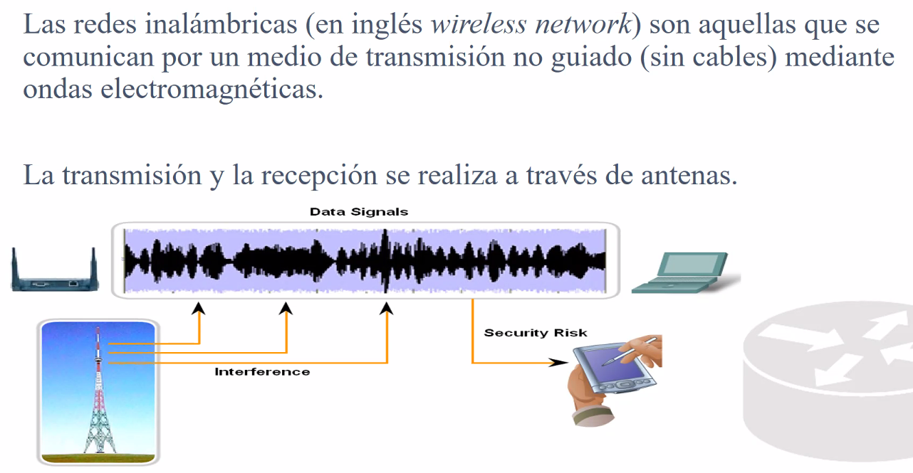

Frequency: Numero de eventos en un tiempo determinado
HZ -> Es lo de siempre y asi
Modular es cambiar una caracteristica de una señal. Literal puedes modular en amplitud frequencia y asi y eso quiere decir que añterastal caracterstica


Se usan filtros.

En cada una de las bandas se un filtro para solo dejar pasar una determinada frequencia.
Con el sintonizador mueves el filtro a la frequencia que quieres escuchar.


El cableado de red va a desaparecer?
NEL
Mientras yo este en la misma frequencia puedo escuchar informacion. Solo necesitas aber la frequencia para robar informacion. Con los cables tendrias que intervenir los cables fisicamente.

Backbone: